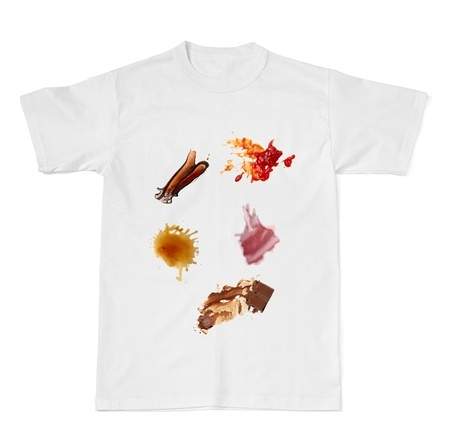
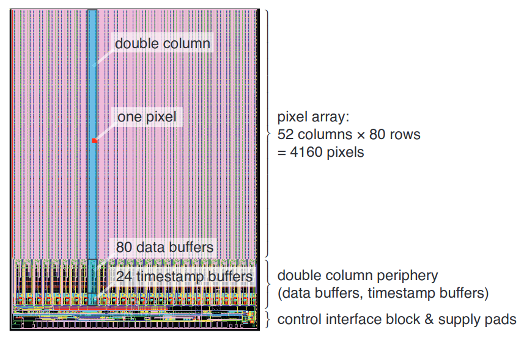
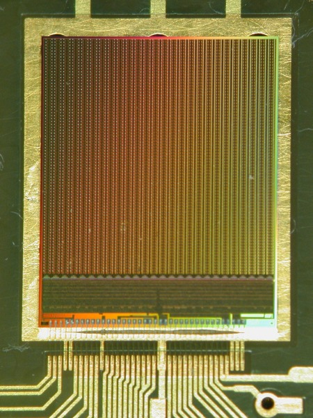
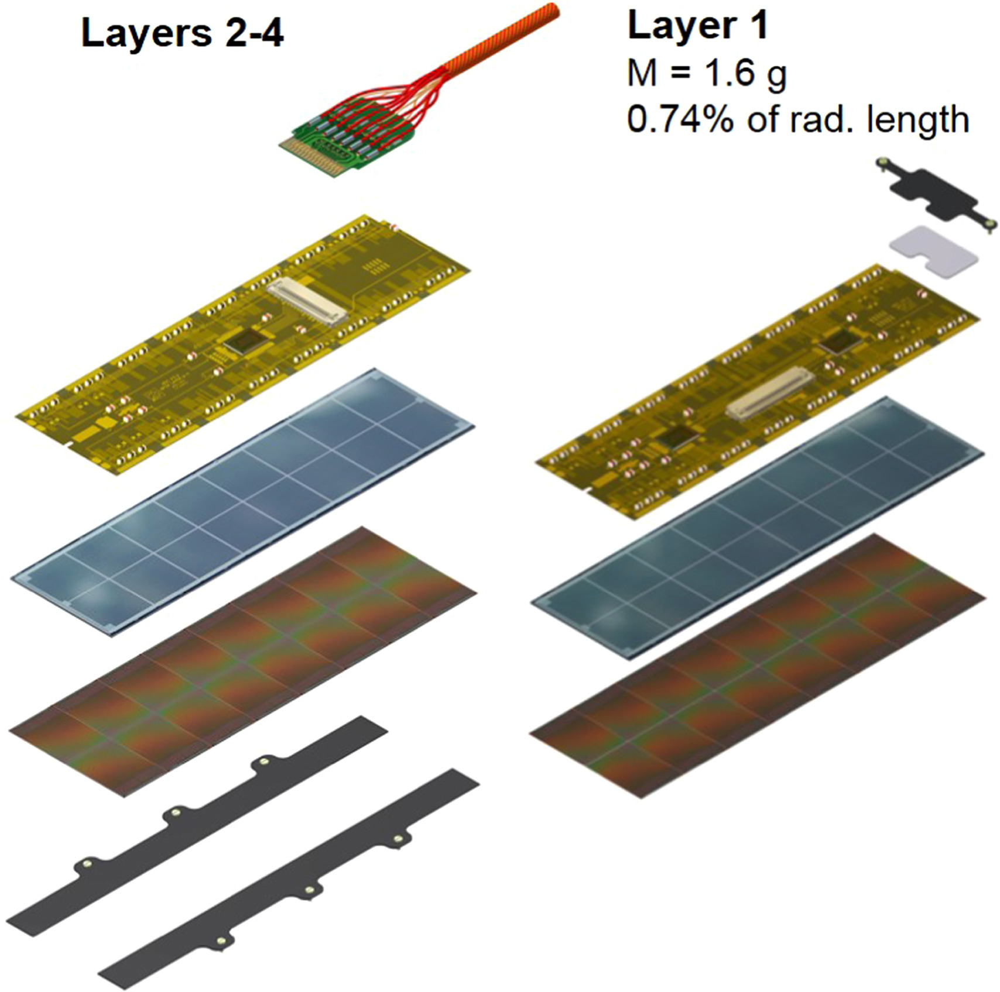

Basic concepts
Before diving deeper into the software itself, some terms and concepts must be covered so that the reader does not get lost in the abundance of terminology and jargon that pervades anything CERN-related.
Your companion glossary can always be found here.
Warning
There might be lots of inaccuracies in this document. Don't judge me!
General CERN Jargon
Phase 0, Phase 1, Phase 2, ...
Phases are periods during which the detectors' hardware has more or less the same capabilities. When large-scale changes and upgrades take place, a new Phase starts.
Multiple phases may belong to a single Run (see below).
[LHC] Run 1, Run 2, ...
Data-taking periods, which are usually followed by Long Shutdown (LS) periods. During a Run, multiple Phases may be observed. For example, Phase 0 and Phase 1 took place during Run 2. Refers to the long-term schedule of the LHC, and it's in the order of months.
Runs' schedule can be found here.
Fill
Todo
TODO
[CMS] Run
Todo
TODO
Data-taking periods (in the order of minutes), during which CMS is recording data.
Hardware
ADC
Analog to Digital Conversion/Converter. The process of digitizing an analog signal.
Pixel Detector
Todo
TODO
Comprised of many Pixels, the Pixel Detector is part of the whole CMS detector.
In the reconstruction code, the Pixel Detector is represented as a 2D matrix of
pixels (PixelDigis), with X and Y coordinates, each one having an
ADC value.
Pixel-local Reconstruction
See here.
Pixel Cluster
Each time particles pass through the Pixel Detector and interact with it, several adjascent Pixels are activated at the same time from each particle. Those adjascent Pixels form Clusters. In other words, a Cluster is the trace that the particle leaves on the Pixel Detector.

RecHit
RecHits are the result of "charge-weighting" a cluster. In layman's terms, it's the "actual" location in the pixel detector where the particle passed through.
Track
Tracks are collections of RecHits on different layers, which RecHits are assumed to compose a part of the trajectory of a single particle through the Pixel Detector.
Vertex
Once tracks are created, they must be assigned to collisions which generated each track. Since many collisions happen at the same time within the area where the beams collide, vertices are, actually, tracks which have been assigned to different collisions.
Read-Out Chip
Pixel Read-Out Chip (ROC) with 2 x 26 x 80 pixels. A chip which measures and converts analog signal to digital.
Specification here.

Image taken from here.

Module
A structure of 2 x 8 Read-Out Chips (ROCs), totalling 2 x 8 x (2 x 26 x 80) = 66560 pixels.
Multiple modules are used in the Pixel Detector.
In the exploded view below, the ROCs can be seen in the second layer from the top.

Info
In software, each module is identified by a unique number. This number, called DetId, is used for all detector parts.
Software
CMSSW
A huge repository of software related to CMS data analysis, reconstruction, also containing various other tools.
Intimidating for beginners, rumors have it that even people that have been developing with it for ages don't want to touch it, not even with a 10-foot pole.
Resembles a mythic monster, that keeps growing with the passage of time, thriving on the keyboard strokes of innocent physicists.

Hydra image source
cmsRun, cmsDriver, runTheMatrix etc.
Proceed to the Tools section for more information.
Configuration files
Most probably referring to
cmsRun configuration files
Pixel Clusterizing
Once data from each pixel has been recorded, we need to detect Clusters of adjascent/neigbouring pixels which have an ADC value above a certain threshold. This process of detecting Clusters is called Clusterizing.
This is implemented in both CPU and GPU.
SoA/AoS
Alternative ways to store class variables in memory for parallel computing.
In usual class declarations, one might have a class attribute, e.g. int num_books.
When an instance of this class is loaded into memory, num_books is most probably close
to other class attributes. Say we have thousands of such class instances and
want to run parallel code on them using only the num_books attribute
of each instance. This way, the computer will have to load to memory lots of data
which will stay unused.
This will degrade performance at low-levels, e.g. cache lines will be filled with data unrelated to the actual calculations, meaning lots of wasted cycles.
Such an approach is called Array of Structures (AoS), and descrbes using an array of structures/classes for storing data.
To alleviate the drawbacks of AoS, instead of thousands of class instances stored as an array, the Structure of Arrays (SoA) approach can be used. This approach suggests using only one class instance for all the data one wants to store.
This way, instead of having an int num_books attribute in the class, the class now
contains an int* nums_books array, which stores the data of all instances.
The data are now stored consecutively in RAM when loaded, meaning less memory overhead and better parallel code performance.
A video explanation may be found here
DetId
A unique, 32-bit number, used to identify all CMS detector parts in CMSSW (mainly code that runs on CPUs).
Defined here.
More info here.
Run Reconstruction
The result of reconstructing tracks and extracting information from raw CMS Run data.
Those reconstructions are created offline (i.e. after the CMS Run has taken place), and are split into four types with regard to their accuracy, detail and time passed since the raw data were taken:
- Stream Express (~20 minutes after data taking)
- Prompt Reconstruction (~48 hours after data taking)
- ReReco (??? years after data taking)
- ReReco Ultra Legacy (??? years after data taking)
Run Registry
Also RunRegistry or RR, this is a web application and API which serves information for Online and Offline CMS run reconstructions.
Link to Run Registry.
[Run Registry] Dataset
Todo
TODO: No idea what this represents
A string identifying the reconstruction that took place, e.g.:
/Express/Cosmics22/DQM/Express/Commissioning2022/DQM/PromptReco/Collisions2022/DQM
DBoD
DataBase on Demand, a service provided by CERN to request database instances for personal or project use.
Note
Not to be confused with BDoD
DRY

Do not Repeat Yourself. Copy/Pasting code is BAD
OpenShift
A RedHat platform similar to Kubernetes, used by CERN under the name "PaaS" (Platform as a Service).
s2i (Source to Image)
A build process for creating docker images directly from the source code, depending on the source's requirements.
Developed by RedHat, it is one of the available methods for deploying software on the OpenShift platform.
A general readme on s2i is available here.
PaaS-specific instructions available here.
Python s2i
For Django projects, a python s2i configuration is used. The source code for this script can be found here.
In general, the python-specific tasks run when creating the
container (e.g. pip install -r requirements.txt)
are run in the assemble script, found
here. This scripts also checks if the source code
is a Django project.
The run script, found
here,
checks for gunicorn, django and other set environmental
variables (e.g. APP_SCRIPT).
These scripts can be augmented by creating custom assemble and run
scripts, such as
this one,
which was created for CertHelper in order to add custom build-time
secret access tokens for CERN's gitlab.
Pod (OpenShift)
The instance of an application deployed on OpenShift, launched inside a containerized environment.
See the official documentation for more information.